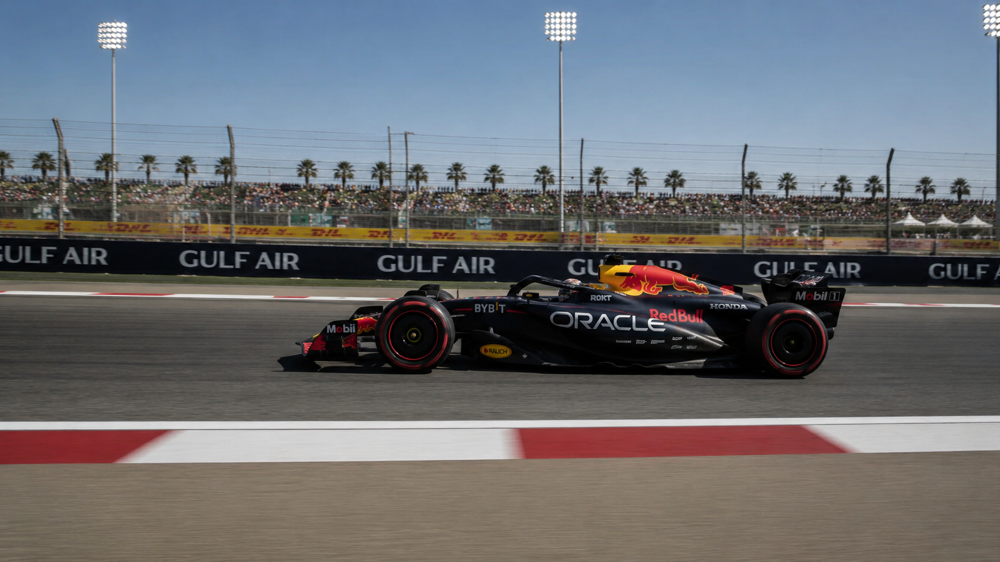

01
Giraffe in dystopian alley
Proxy giraffe motion and alley blocking become the final photoreal shot.

BBC PIPELINE R&D
Camera-locked AI generation using Unreal Engine, image references, and Seedance-style video rendering.
Unreal Engine controls the shot. AI renders the look.
CORE PRINCIPLE
Unreal Engine defines camera movement, scale, blocking, timing, and composition. AI handles the final surface, lighting, texture, atmosphere, and cinematic finish.
01
Proxy giraffe motion and alley blocking become the final photoreal shot.


02
A simple comp proxy keeps path and scale while the render takes on cinematic realism.

03
Orbital scale and camera layout stay fixed while surface, plasma, and atmosphere are rendered.

WHY IT MATTERS
Camera, scale, blocking, and timing are defined before AI generation.
Lighting, texture, atmosphere, and finish become visible during exploration.
The team can judge a shot direction without waiting for a full CG render path.
The model is guided by the playblast, target frame, and reference sheets.
STEP BY STEP
Camera, blocking, scale, timing, and composition are solved in previs first.
A selected playblast frame and prompt establish the final look before animation.

Render as a photoreal giraffe in an overgrown urban alley. Preserve camera, scale, and composition.
Subject, location, and style reference sheets keep the generation controlled.


Playblast video plus reference sheets are fed into the video model.

Use the playblast video and attached reference sheets to generate the final AI video render.
CORE TEMPLATE
Use the uploaded references strictly.
Reference hierarchy:
1. Playblast video = exact camera movement, camera path, speed, timing, framing, perspective, object scale, object position, blocking, and motion.
2. Final frame = exact composition, lighting, colour, scale, spacing, framing, and visual target.
3. Character/object sheet = exact subject design, proportions, materials, texture, and detail.
4. Location sheet = exact environment style, layout, materials, lighting, and atmosphere.
The playblast is the exact motion reference. Follow it precisely. Do not change the camera move. Do not change timing. Do not cut. Single continuous shot.
Replace the placeholder object from the playblast with the final subject, while preserving the same path, scale, position, timing, and blocking.
Use the final frame as the exact composition reference. Preserve the same camera framing, screen position, object size, spacing, overlap, and layout.
Use the character/object sheet only for the subject's design and material details.
Use the location sheet only for the environment design, materials, and atmosphere.
Create a photoreal cinematic video shot with realistic lighting, grounded motion, accurate scale, believable materials, and high-end VFX quality.
Add only subtle realistic secondary motion where appropriate. Keep all movement locked to the playblast.
Negative:
Do not change the camera move.
Do not change the timing.
Do not change the object path.
Do not change the scale.
Do not change the composition.
Do not add new objects.
Do not remove important objects.
Do not create a new shot.
Do not cut.
Do not make it look like concept art, game render, cartoon, or AI-generated.CLOSING NOTE
This workflow can be done with Blender, Cinema 4D, Houdini, or any other 3D software.